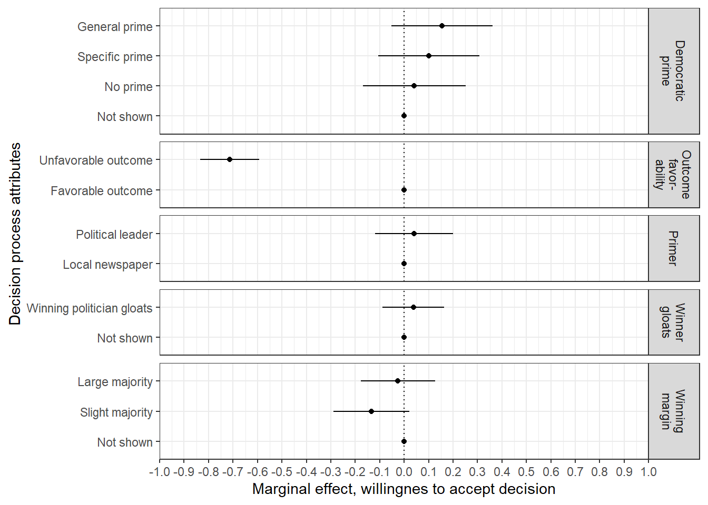
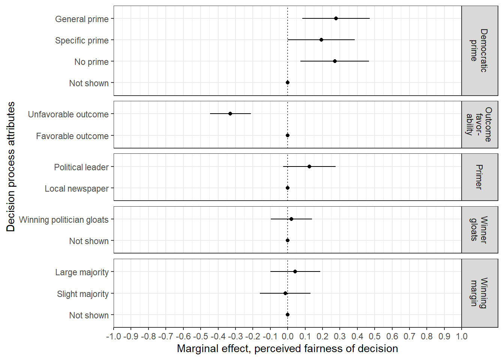

Chapter 23 Numbered answer scale
This chapter shows the treatment effects for the alternative, numbered answer scale. This scale reads:
- 1 Most fair
- 2
- 3
- 4
- 5 Least fair
Half of the respondents were asked to answer the post measures of fairness, reasonableness, and willingness to accept the decision with the regular, worded answer scale, while the other half gets this numbered scale in stead (please note that the scales are reversed in all analyses).
if(!require("broom")){install.packages("broom"); library(broom)}
if(!require("haven")){install.packages("haven"); library(haven)}
if(!require("here")){install.packages("here"); library(here)}
if(!require("knitr")){install.packages("knitr"); library(knitr)}
options(kableExtra.latex.load_packages = FALSE)
if(!require("kableExtra")){install.packages("kableExtra"); library(kableExtra)}
if(!require("naniar")){install.packages("naniar"); library(naniar)}
if(!require("tidyverse")){install.packages("tidyverse"); library(tidyverse)}
set.seed(2016)
d <- read_sav("C:\\Users/Sveinung/OneDrive/NORCE 2018-/goodloser/Conjoint/Bookdown-goodloser/Data/Goodloser-exp3.sav")
knitr::opts_chunk$set(echo = TRUE, knitr.kable.NA = "", cache = FALSE, warning = FALSE)23.1 Prepare data
main_01 <- d %>%
mutate(rsp_id = as.numeric(responseid),
rsp_beg = case_when(r13pad1 == 1 ~ "In favour of ban on begging",
r13pad1 == 2 ~ "Against ban on begging"),
rsp_beg_imp = case_when(r13pad2 %in% 1:2 ~ "Important",
r13pad2 %in% 3:5 ~ "Not important"),
rsp_toll = case_when(r13pad3 == 1 ~ "In favour of road toll increase of diesel cars",
r13pad3 == 2 ~ "Against road toll increase of diesel cars"),
rsp_toll_imp = case_when(r13pad4 %in% 1:2 ~ "Important",
r13pad4 %in% 3:5 ~ "Not important"),
treat_issue = case_when(r13pad5_sak == 1 ~ "Ban on begging",
r13pad5_sak == 2 ~ "Road toll increase of diesel cars"),
treat_outcome = case_when(r13pad5_utfall == 1 ~ "The Yes side won the vote",
r13pad5_utfall == 2 ~ "The No side won the vote"),
treat_outfav = case_when(r13pad5_sak == 1 & r13pad1 == 1 & r13pad5_utfall == 1 ~ "Favorable outcome",
r13pad5_sak == 1 & r13pad1 == 2 & r13pad5_utfall == 2 ~ "Favorable outcome",
r13pad5_sak == 1 & r13pad1 == 1 & r13pad5_utfall == 2 ~ "Unfavorable outcome",
r13pad5_sak == 1 & r13pad1 == 2 & r13pad5_utfall == 1 ~ "Unfavorable outcome",
r13pad5_sak == 2 & r13pad3 == 1 & r13pad5_utfall == 1 ~ "Favorable outcome",
r13pad5_sak == 2 & r13pad3 == 2 & r13pad5_utfall == 2 ~ "Favorable outcome",
r13pad5_sak == 2 & r13pad3 == 1 & r13pad5_utfall == 2 ~ "Unfavorable outcome",
r13pad5_sak == 2 & r13pad3 == 2 & r13pad5_utfall == 1 ~ "Unfavorable outcome"),
treat_winningmargin = case_when(r13pad5_vinnermargin == 1 ~ "Not shown",
r13pad5_vinnermargin == 2 ~ "Slight majority",
r13pad5_vinnermargin == 3 ~ "Large majority"),
treat_winnergloat = case_when(r13pad5_vinner == 1 ~ "Not shown",
r13pad5_vinner == 2 ~ "Winning politician gloats"),
treat_prime = case_when(r13pad5_avsender == 1 ~ "Not shown",
r13pad5_avsender == 2 | r13pad5_avsender == 5 ~ "No prime",
r13pad5_avsender == 3 | r13pad5_avsender == 6 ~ "Specific prime",
r13pad5_avsender == 4 | r13pad5_avsender == 7 ~ "General prime"),
treat_messenger = case_when(r13pad5_avsender %in% 3:4 ~ "Political leader",
r13pad5_avsender %in% 6:7 ~ "Local newspaper"),
post_fair = case_when(r13pad6a == 1 | r13pad6b == 1 ~ 5,
r13pad6a == 2 | r13pad6b == 2 ~ 4,
r13pad6a == 3 | r13pad6b == 3 ~ 3,
r13pad6a == 4 | r13pad6b == 4 ~ 2,
r13pad6a == 5 | r13pad6b == 5 ~ 1),
post_reasonable = case_when(r13pad7a == 1 | r13pad7b == 1 ~ 5,
r13pad7a == 2 | r13pad7b == 2 ~ 4,
r13pad7a == 3 | r13pad7b == 3 ~ 3,
r13pad7a == 4 | r13pad7b == 4 ~ 2,
r13pad7a == 5 | r13pad7b == 5 ~ 1),
post_accept = case_when(r13pad8a == 1 | r13pad8b == 1 ~ 5,
r13pad8a == 2 | r13pad8b == 2 ~ 4,
r13pad8a == 3 | r13pad8b == 3 ~ 3,
r13pad8a == 4 | r13pad8b == 4 ~ 2,
r13pad8a == 5 | r13pad8b == 5 ~ 1),
scale = case_when(r13pad6_ran == 1 ~ "Worded",
r13pad6_ran == 2 ~ "Numbered")
) %>%
replace_with_na_all(condition = ~.x == 98 )%>% #Recode 98 (not asked) as missing
filter(!is.na(r13pad6_ran)) %>% #Remove NA's
## We want the value labels in particular order for the tables and figures.
mutate(treat_winningmargin = lvls_reorder(treat_winningmargin, c(2, 3, 1)),
treat_prime = lvls_reorder(treat_prime, c(3, 2, 4, 1))
)
main_01 <- main_01 %>%
filter(scale == "Numbered")23.2 Reasonable decision
source("Functions/amce.R")
res_main <- main_01 %>%
amce(post_reasonable, treat_outfav, treat_winningmargin, treat_winnergloat, treat_prime, treat_messenger)
res_main <- res_main %>%
mutate(
treatment = case_when(treatment == "treat_outfav" ~ "Outcome\nfavor-\nability",
treatment == "treat_winningmargin" ~ "Winning\nmargin",
treatment == "treat_winnergloat" ~ "Winner\ngloats",
treatment == "treat_prime" ~ "Democratic\nprime",
treatment == "treat_messenger" ~ "Primer")
)
#Figure
fig_amce <-
res_main %>%
ggplot(aes(x = estimate, y = value)) +
facet_grid(
treatment ~ .,
scales = "free_y",
space = "free_y") +
geom_errorbarh(
aes(xmin = estimate - (2 * std_error),
xmax = estimate + (2 * std_error)),
height = 0) +
geom_point() +
geom_vline(aes(xintercept = 0), linetype = "dotted") +
scale_x_continuous(
limits = c(-1, 1),
breaks = round(seq(-1, 1, .1), 2),
expand = c(0, 0)) +
labs(
x = "Marginal effect, reasonable decision",
y = "Decision process attributes") +
theme_bw() +
theme(plot.margin = unit(c(2, 2, 2, 2), "mm")) +
theme(panel.spacing = unit(0.5, "lines"))
fig_amce
ggsave(
here("output", "figs", "pngs", "fig_numberscale_reasonable.png"),
plot = fig_amce,
width = 5.5, height = 2.75
)## Error in grDevices::png(..., res = dpi, units = "in"): unable to start png() deviceggsave(
here("output", "figs", "pdfs", "fig_numberscale_reasonable.pdf"),
plot = fig_amce,
width = 5.5, height = 2.75
)## Error in grDevices::pdf(file = filename, ..., version = version): cannot open file 'C:/Users/Sveinung/OneDrive/NORCE 2018-/goodloser/Conjoint/Bookdown-goodloser/output/figs/pdfs/fig_numberscale_reasonable.pdf'#Table
res_main <- res_main %>%
select(value, estimate, std_error, statistic, p_value)
kable(res_main, booktabs = TRUE, caption = "Average Marginal Component Effects", col.names = linebreak(c("Treatment value", "Estimate", "Std. Error", "t-statistic", "p value"))) %>%
kable_styling(bootstrap_options = c("striped", "hover", "responsive")) %>%
group_rows(index = c("Outcome favorability" = 2, "Winning margin" = 3, "Winner gloating" = 2, "Good loser prime" = 4, "Primer" = 2))| Treatment value | Estimate | Std. Error | t-statistic | p value |
|---|---|---|---|---|
| Outcome favorability | ||||
| Favorable outcome | 0.0000000 | 0.0000000 | NA | NA |
| Unfavorable outcome | -0.8840078 | 0.0634608 | -13.9299791 | 0.0000000 |
| Winning margin | ||||
| Not shown | 0.0000000 | 0.0000000 | NA | NA |
| Slight majority | 0.0114089 | 0.0835200 | 0.1366006 | 0.8913676 |
| Large majority | 0.0617240 | 0.0819933 | 0.7527929 | 0.4517102 |
| Winner gloating | ||||
| Not shown | 0.0000000 | 0.0000000 | NA | NA |
| Winning politician gloats | -0.0012739 | 0.0675702 | -0.0188536 | 0.9849607 |
| Good loser prime | ||||
| Not shown | 0.0000000 | 0.0000000 | NA | NA |
| No prime | 0.1279559 | 0.1127675 | 1.1346874 | 0.2567150 |
| Specific prime | 0.0560683 | 0.1104272 | 0.5077399 | 0.6117217 |
| General prime | 0.2780749 | 0.1105579 | 2.5151960 | 0.0120162 |
| Primer | ||||
| Local newspaper | 0.0000000 | 0.0000000 | NA | NA |
| Political leader | 0.0785575 | 0.0863168 | 0.9101065 | 0.3630464 |
23.3 Willingnes to accept
source("Functions/amce.R")
res_main <- main_01 %>%
amce(post_accept, treat_outfav, treat_winningmargin, treat_winnergloat, treat_prime, treat_messenger)
res_main <- res_main %>%
mutate(
treatment = case_when(treatment == "treat_outfav" ~ "Outcome\nfavor-\nability",
treatment == "treat_winningmargin" ~ "Winning\nmargin",
treatment == "treat_winnergloat" ~ "Winner\ngloats",
treatment == "treat_prime" ~ "Democratic\nprime",
treatment == "treat_messenger" ~ "Primer")
)
#Figure
fig_amce <-
res_main %>%
ggplot(aes(x = estimate, y = value)) +
facet_grid(
treatment ~ .,
scales = "free_y",
space = "free_y") +
geom_errorbarh(
aes(xmin = estimate - (2 * std_error),
xmax = estimate + (2 * std_error)),
height = 0) +
geom_point() +
geom_vline(aes(xintercept = 0), linetype = "dotted") +
scale_x_continuous(
limits = c(-1, 1),
breaks = round(seq(-1, 1, .1), 2),
expand = c(0, 0)) +
labs(
x = "Marginal effect, willingnes to accept decision",
y = "Decision process attributes") +
theme_bw() +
theme(plot.margin = unit(c(2, 2, 2, 2), "mm"))
fig_amce
ggsave(
here("output", "figs", "pngs", "fig_numberscale_accept.png"),
plot = fig_amce,
width = 5.5, height = 2.75
)## Error in grDevices::png(..., res = dpi, units = "in"): unable to start png() deviceggsave(
here("output", "figs", "pdfs", "fig_numberscale_accept.pdf"),
plot = fig_amce,
width = 5.5, height = 2.75
)## Error in grDevices::pdf(file = filename, ..., version = version): cannot open file 'C:/Users/Sveinung/OneDrive/NORCE 2018-/goodloser/Conjoint/Bookdown-goodloser/output/figs/pdfs/fig_numberscale_accept.pdf'#table
res_main <- res_main %>%
select(value, estimate, std_error, statistic, p_value)
kable(res_main, booktabs = TRUE, caption = "Average Marginal Component Effects", col.names = linebreak(c("Treatment value", "Estimate", "Std. Error", "t-statistic", "p value"))) %>%
kable_styling(bootstrap_options = c("striped", "hover", "responsive")) %>%
group_rows(index = c("Outcome favorability" = 2, "Winning margin" = 3, "Winner gloating" = 2, "Good loser prime" = 4, "Primer" = 2))| Treatment value | Estimate | Std. Error | t-statistic | p value |
|---|---|---|---|---|
| Outcome favorability | ||||
| Favorable outcome | 0.0000000 | 0.0000000 | NA | NA |
| Unfavorable outcome | -0.7141278 | 0.0603090 | -11.8411444 | 0.0000000 |
| Winning margin | ||||
| Not shown | 0.0000000 | 0.0000000 | NA | NA |
| Slight majority | -0.1335601 | 0.0777282 | -1.7182968 | 0.0859788 |
| Large majority | -0.0253848 | 0.0763059 | -0.3326713 | 0.7394356 |
| Winner gloating | ||||
| Not shown | 0.0000000 | 0.0000000 | NA | NA |
| Winning politician gloats | 0.0382238 | 0.0629732 | 0.6069853 | 0.5439658 |
| Good loser prime | ||||
| Not shown | 0.0000000 | 0.0000000 | NA | NA |
| No prime | 0.0412902 | 0.1053532 | 0.3919213 | 0.6951801 |
| Specific prime | 0.1010830 | 0.1030878 | 0.9805520 | 0.3269949 |
| General prime | 0.1547187 | 0.1032904 | 1.4979003 | 0.1344002 |
| Primer | ||||
| Local newspaper | 0.0000000 | 0.0000000 | NA | NA |
| Political leader | 0.0400710 | 0.0798943 | 0.5015500 | 0.6161244 |
23.4 Fairness perceptions
source("Functions/amce.R")
res_main <- main_01 %>%
amce(post_fair, treat_outfav, treat_winningmargin, treat_winnergloat, treat_prime, treat_messenger)
res_main <- res_main %>%
mutate(
treatment = case_when(treatment == "treat_outfav" ~ "Outcome\nfavor-\nability",
treatment == "treat_winningmargin" ~ "Winning\nmargin",
treatment == "treat_winnergloat" ~ "Winner\ngloats",
treatment == "treat_prime" ~ "Democratic\nprime",
treatment == "treat_messenger" ~ "Primer")
)
#Figure
fig_amce <-
res_main %>%
ggplot(aes(x = estimate, y = value)) +
facet_grid(
treatment ~ .,
scales = "free_y",
space = "free_y") +
geom_errorbarh(
aes(xmin = estimate - (2 * std_error),
xmax = estimate + (2 * std_error)),
height = 0) +
geom_point() +
geom_vline(aes(xintercept = 0), linetype = "dotted") +
scale_x_continuous(
limits = c(-1, 1),
breaks = round(seq(-1, 1, .1), 2),
expand = c(0, 0)) +
labs(
x = "Marginal effect, perceived fairness of decision",
y = "Decision process attributes") +
theme_bw() +
theme(plot.margin = unit(c(2, 2, 2, 2), "mm"))
fig_amce
ggsave(
here("output", "figs", "pngs", "fig_numberscale_fair.png"),
plot = fig_amce,
width = 5.5, height = 2.75
)## Error in grDevices::png(..., res = dpi, units = "in"): unable to start png() deviceggsave(
here("output", "figs", "pdfs", "fig_numberscale_fair.pdf"),
plot = fig_amce,
width = 5.5, height = 2.75
)## Error in grDevices::pdf(file = filename, ..., version = version): cannot open file 'C:/Users/Sveinung/OneDrive/NORCE 2018-/goodloser/Conjoint/Bookdown-goodloser/output/figs/pdfs/fig_numberscale_fair.pdf'#table
res_main <- res_main %>%
select(value, estimate, std_error, statistic, p_value)
kable(res_main, booktabs = TRUE, caption = "Average Marginal Component Effects", col.names = linebreak(c("Treatment value", "Estimate", "Std. Error", "t-statistic", "p value"))) %>%
kable_styling(bootstrap_options = c("striped", "hover", "responsive")) %>%
group_rows(index = c("Outcome favorability" = 2, "Winning margin" = 3, "Winner gloating" = 2, "Good loser prime" = 4, "Primer" = 2))| Treatment value | Estimate | Std. Error | t-statistic | p value |
|---|---|---|---|---|
| Outcome favorability | ||||
| Favorable outcome | 0.0000000 | 0.0000000 | NA | NA |
| Unfavorable outcome | -0.3290274 | 0.0588073 | -5.5950045 | 0.0000000 |
| Winning margin | ||||
| Not shown | 0.0000000 | 0.0000000 | NA | NA |
| Slight majority | -0.0141443 | 0.0729979 | -0.1937632 | 0.8463913 |
| Large majority | 0.0431466 | 0.0717044 | 0.6017291 | 0.5474584 |
| Winner gloating | ||||
| Not shown | 0.0000000 | 0.0000000 | NA | NA |
| Winning politician gloats | 0.0216280 | 0.0591114 | 0.3658853 | 0.7145096 |
| Good loser prime | ||||
| Not shown | 0.0000000 | 0.0000000 | NA | NA |
| No prime | 0.2703585 | 0.0986634 | 2.7402109 | 0.0062233 |
| Specific prime | 0.1928446 | 0.0965888 | 1.9965534 | 0.0460802 |
| General prime | 0.2772243 | 0.0967402 | 2.8656570 | 0.0042279 |
| Primer | ||||
| Local newspaper | 0.0000000 | 0.0000000 | NA | NA |
| Political leader | 0.1241011 | 0.0753423 | 1.6471629 | 0.0999233 |